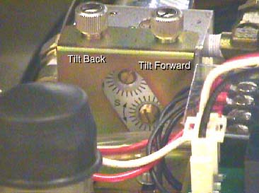

| NOTE: | This is a self bleeding system. Trapped air can cause slowed or limited tilt range. Exercising the full range of motion several times should purge any trapped air from the hydraulic system. Tilt Back. Tilt Forward. Tilt Forward. Tilt Back |
Illustration 1: Tilt Speed Adjustment Screws
